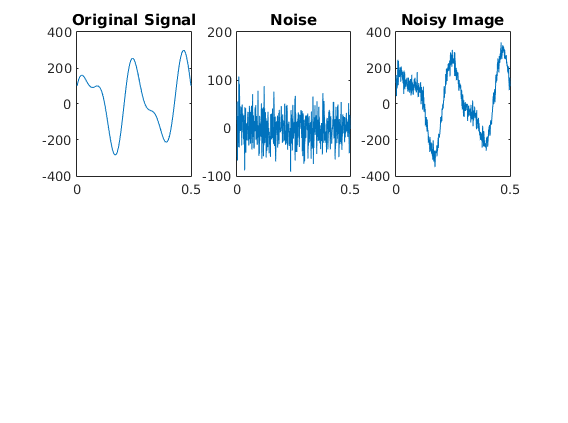
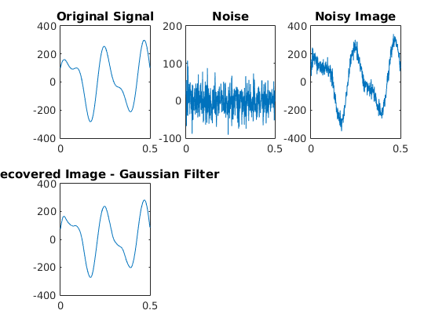
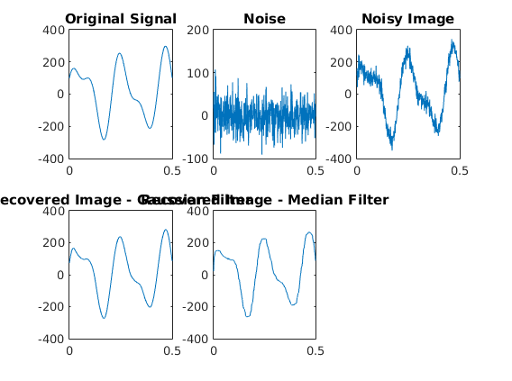
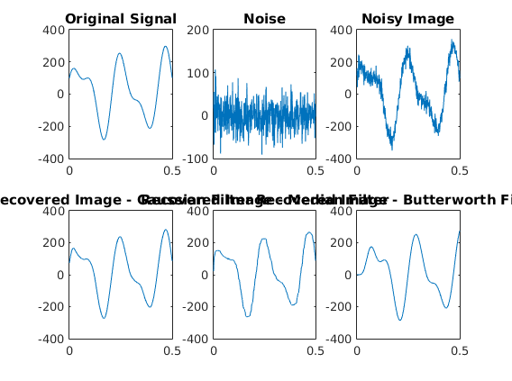

De-noising Signals
Contents
Generate Input Signal
% Create time axis etc as given in the assignment and plot the signal along % with noise t = [0:0.001:0.5]; orig = 200*sin(30*t)+100*cos(54*t); subplot(2,3,1); plot(t,orig); title('Original Signal'); noise = 30*randn(1,501); subplot(2,3,2); plot(t,noise); title('Noise'); ip = orig+noise; subplot(2,3,3); plot(t,ip); title('Noisy Image');
Technique #1 - Gaussian Filtering
Create a gaussian filter and filter the audio signal using this low-pass filter
gaussFilter = gausswin(45); gaussFilter = gaussFilter / sum(gaussFilter); % Normalize. smoothedip = conv(ip, gaussFilter,'same'); subplot(2,3,4); plot(t,smoothedip); title('Recovered Image - Gaussian Filter');
Technique #2 - Median Filtering
Create a Median Filter and filter the noisy image using this technique
medFiltered = medfilt1(ip,40);
subplot(2,3,5);
plot(t,medFiltered);
title('Recovered Image - Median Filter');
 Technique #3 - Butterworth Filtering
I used a 6th Order Butterworth filter with a threshold of 0.03 as my third technique
[b,a] = butter(6,0.03);
dataOut = filter(b,a,ip);
subplot(2,3,6);
plot(t,dataOut);
title('Recovered Image - Butterworth Filtered');
 Discussion
Subtracting the noise by obtaining the noise using high-pass filters didn't work due to scale issues and hence all the 3 filters used by me were low-pass filters having different qualities Filtering in the fourier domain was not as effective as these as it attenuated the high-frequency components in the signal along with the noise
Gaussian filtering works the best for noise having a normal distribution, hence we could conclude that this noise was normal-like in nature, which is true
Median filtering usually works for salt-and-pepper noise which was not significantly present here apparent from the results.
Butterworth filter attenuated some components of the original signal but was excellent in removing the noise